原文连接:https://www.cnblogs.com/xiaoguan-bky/p/11181341.html
1.初识Python
Python是一门非常简单优雅的编程语言，可以用极少的代码就能实现强大的功能，而且学习起来十分简单，没有编程基础也可轻松入门。其功能强大，特别是第三方库的库的支持，使得开发方便十分方便快捷。
根据以往的安装经历，下面分享一种简便快捷的Python安装方法，Pycharm+Anaconda。Anaconda拥有很多常用的第三方库，省去了一一安装第三方库的繁琐操作。
2.Pycharm安装
官网下载地址：https://www.jetbrains.com/pycharm/download/#section=windows
选择相应的版本下载，本人使用Windows-Professional版本。
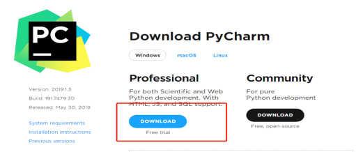
下载完成后，双击安装包进行安装，单击“Next”按钮。自定义软件安装路径，建议不要使用中文字符，单击“Next”按钮。
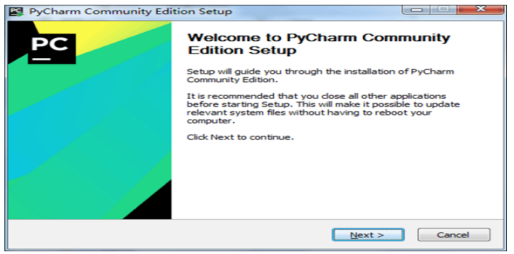
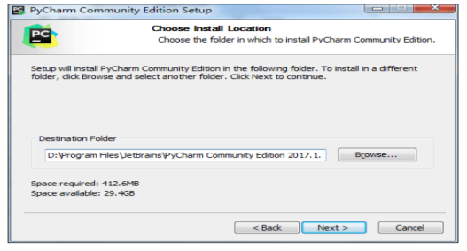
根据自己电脑的系统选择位数，创建桌面快捷方式并关联“.py”文件，单击“Next”按钮。
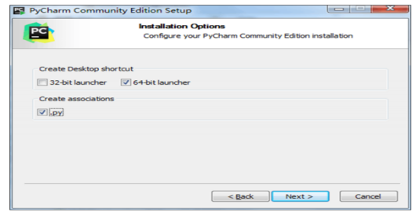
单击“Install”按钮默认安装。安装完成后，单击“Finsh”按钮。
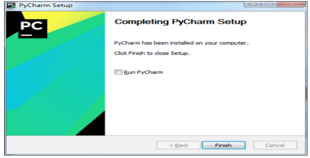
双击桌面上的快捷方式，在弹出的对话框中选择不导入开发环境配置文件，单击“OK”按钮。
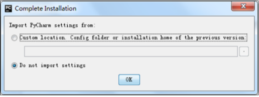
启动Pycharm,单击“Create New Project”按钮创建新项目,自定义项目 储存路径，IDE默认关联Python解释器，单击“Create”按钮。Pycharm成功安装。
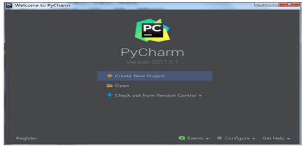
3.Anaconda安装
官网下载地址：https://www.anaconda.com/distribution/
选择相应的版本下载，本人使用Windows-Python3.6版本。
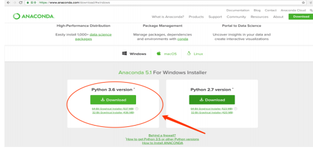
下载完成后，双击安装包进行安装，单击“Next”按钮。自定义软件安装路径，建议不要使用中文字符，单击“Next”按钮。
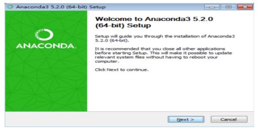
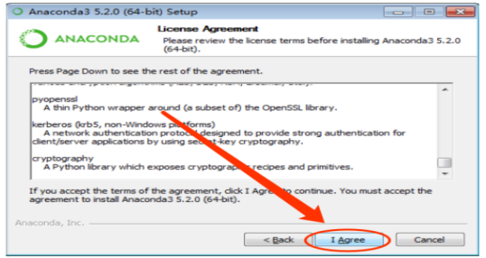
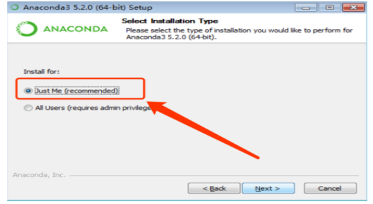
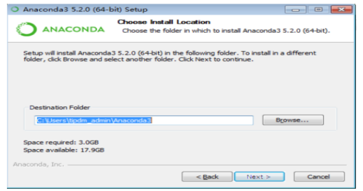
添加环境变量勾选。
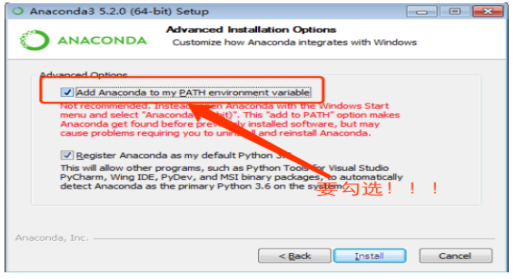
待安装进度条完毕，点击finish完成安装。
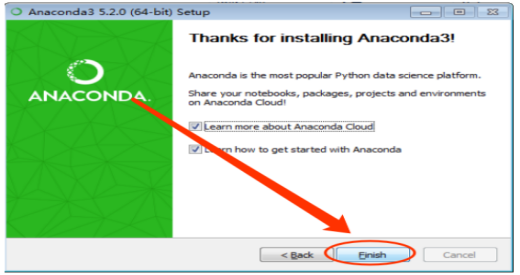4.Pycharm中使用Anaconda第三方包
打开Pycharm创建新工程，设置工程路径。
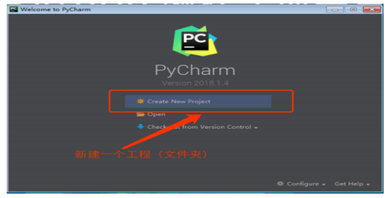
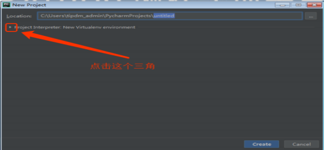
选择Python环境，Anaconda安装自带Python。（以下按图示操作）
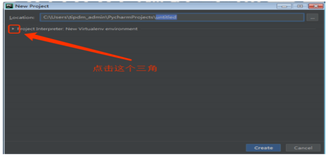
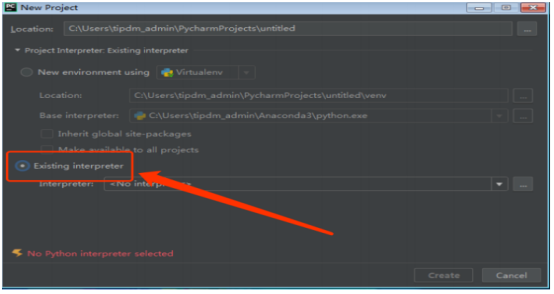
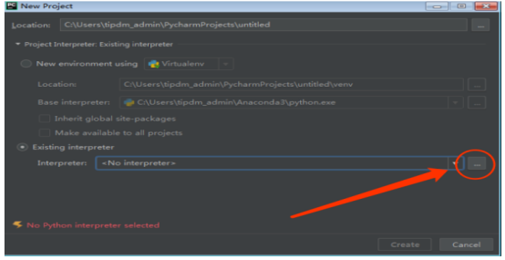

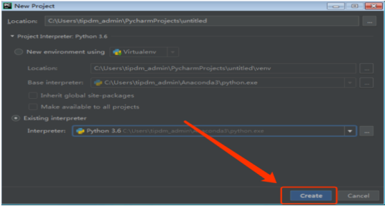
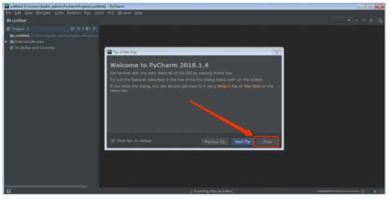
设置完毕，Python安装完成，Anaconda提供常用的第三方库。Pycharm中查看已有第三库菜单栏中依次选择FileSetting-Priject Interpreter
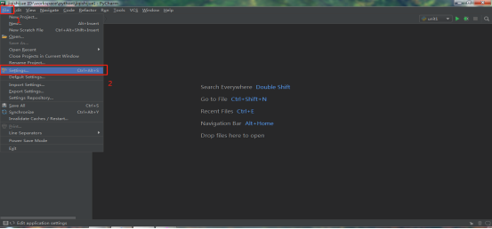
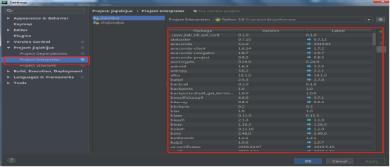
Pycharm+Anaconda安装Python的方法就分享介绍完毕，技术知识如有不足，还望多多指教。下面附上cmd命令查看已安装Python版本。